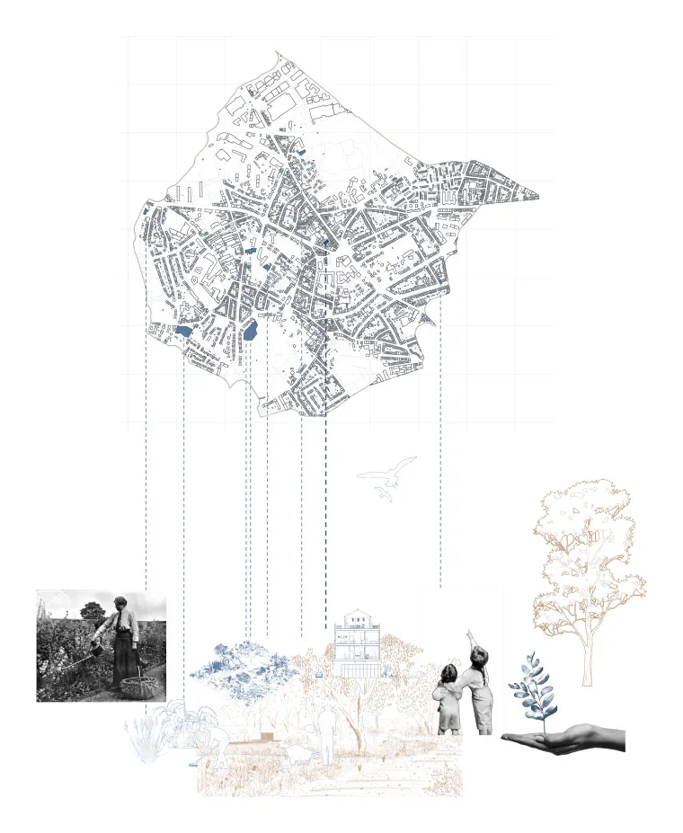
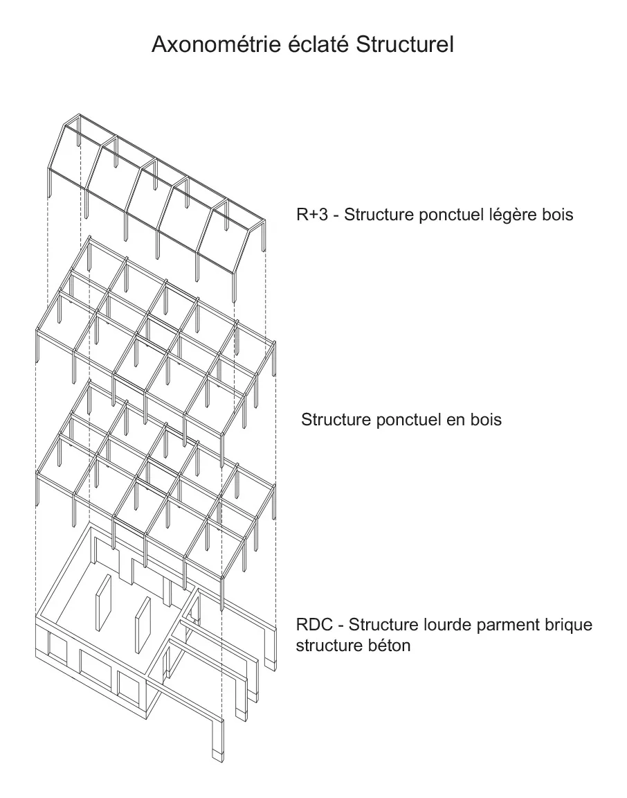

Étudiant en architecture à l'UCLouvain LOCI, campus de Bruxelles Saint-Gilles. Bachelier obtenu en 2026, en année de césure, en route vers un master en architecture et urbanisme.
Originaire de Rennes, basé à Bruxelles. Socle scientifique en mathématiques et en ingénierie des structures.
Mon travail se situe à l'intersection de l'architecture, du territoire et de la donnée.

« L'espace garde la mémoire des usages, et c'est souvent là que se trouve le point de départ du projet. »
Je pars rarement de la forme. Ce qui m'intéresse d'abord, ce sont les usages : ce que les gens font d'un lieu, ce que le programme leur permet, et ce qu'il ne prévoit pas.
J'expérimente la manière dont les outils de calcul et l'intelligence artificielle transforment notre façon de lire, d'analyser et de concevoir les territoires.
« Il était important de choisir les bonnes échelles en fonction des questions que l'on se posait. Chaque élément montré renvoie à une question posée. »
Une analyse de site n'est pas un jeu de planches attendu. Chaque document produit répond à une question, et l'échelle se choisit en fonction de la question.
À Berchem-Sainte-Agathe : un relevé des parcs et des potagers du quartier, une lecture des circuits d'alimentation, un travail sur le bâti existant, un herbier des espèces relevées sur place.
Le site d'abord, physiquement : visite, relevés, photographies de l'existant. Le cadre réglementaire ensuite — règlement d'urbanisme, normes communales, besoins du programme.
Puis les analyses, multi-échelles : transports, zones vertes, activités, commerces. Les constituants de la commune, pas seulement ceux de la parcelle.
Puis les volumétries, élaborées pour séquencer le programme. Puis la répartition du commun et du privé. Puis l'organisation structurelle, déduite des espaces une fois organisés, avec les ouvertures, la lumière voulue, l'orientation et les ombres portées par les bâtiments voisins. Puis la matérialité, déduite de la structure et négociée avec l'environnement bâti.
Le dessin arrive en huitième position sur huit.
Le plus important est de bien analyser le terrain et ses contraintes, parce que le retour en arrière fait perdre un temps colossal.
Il y a pourtant deux sortes de retours. Ceux que l'on subit : un élément n'a pas été pris assez au sérieux en amont. Ceux que l'on choisit : la structure la plus pertinente pour le site propose une meilleure organisation, et l'on remonte redécouper la hiérarchie du programme.
Toute la rigueur en amont sert à éliminer les premiers pour pouvoir se permettre les seconds. Ces retours restent d'ailleurs partiels : généralement, on ne passe pas du tout au tout.
Berchem-Sainte-Agathe. Le programme donné était un habitat collectif ; l'enjeu, pour moi, était ailleurs : comment intégrer le projet à la ville et à la commune, et comment y faire participer le voisinage.
La réponse est programmatique. Habiter, le programme reçu. Produire, une production agroalimentaire intégrée à l'habitat. Partager, un marché ouvert au quartier.
Le projet est publié sur ce site : implantation, plans, coupes, élévation, analyses de site, cycle de production.
Le cadre réglementaire occupe la deuxième position dans ma méthode : après le relevé de terrain, avant les analyses.
Chez MAMOUT, à Bruxelles, j'ai suivi des projets en phase esquisse, permis et exécution — la découverte des normes et des règles d'urbanisme dans le travail quotidien d'une agence.
En parallèle des études, je suis le chantier d'une maison individuelle : préparation, intervention sur site, suivi de l'avancement, lecture de plans, coordination avec les corps de métier.
De l'analyse de site et du diagnostic territorial : relevé, analyses multi-échelles, lecture des constituants d'une commune — transports, zones vertes, activités, commerces.
De la production graphique et éditoriale : carnets, axonométries explicatives, collages, panneaux grand format.
De la conception paramétrique, de l'analyse environnementale et de l'analyse structurelle.
Modélisation et conception : Rhino 8, Grasshopper, AutoCAD.
Analyse : QGIS pour la donnée territoriale, Karamba3D pour la structure, Ladybug Tools pour l'environnement.
Rendu : D5 Render, en LiveSync avec Rhino.
Édition : Photoshop, Illustrator, InDesign, jusqu'à l'impression grand format.
Un stage à temps plein de six mois en agence d'architecture, ouvert à une durée plus courte selon les besoins de l'agence.
Disponible dès à présent, jusqu'en août 2027.
Des agences engagées en maîtrise d'œuvre sur du logement collectif ou des équipements publics, commande publique comprise. Paris et la France en priorité, sans fermer la porte à l'international.
Pas de filtre sur les missions.
Français, langue maternelle.
Anglais B2, appuyé par deux ans de scolarité à Jersey.
Italien et espagnol : notions.
Habiter et produire — un fragment de ville hybride où cohabitent le logement et la fonction productive : 25 logements et 10 unités de production.
Une réflexion prospective sur la réintroduction de la production dans le tissu urbain. Projet mené seul : analyse de site, production des documents, réalisation et dessin.
Habiter, produire, partager — Berchem-Sainte-Agathe. Analyse de site et volumétrie en binôme : les deux projets devaient être complémentaires et partager une logique volumétrique. Puis chacun son bâtiment, de A à Z.
Productions : le carnet Habiter, produire, partager, une axonométrie éclatée du cycle de production et de gouvernance en dix étapes, des collages architecturaux.
Stage d'observation chez MAMOUT, à Bruxelles. Réunions d'équipe, échanges avec les architectes, organisation du travail du bureau.
Suivi de projets en phase esquisse, permis et exécution.
Réhabilitation d'un entrepôt en centre culturel, à Braine-l'Alleud — une reconversion pour la commune.
Modélisation de l'existant, stratégie d'intervention existant/projet, plans, coupes et perspectives.
Bachelier en architecture, UCLouvain LOCI, campus de Bruxelles Saint-Gilles — faculté d'architecture, d'ingénierie architecturale et d'urbanisme.
Les projets ci-dessus sont issus de ces années d'atelier.
2022 — 2023 : année préparatoire en architecture d'intérieur, LISAA, Rennes.
2022 : baccalauréat, lycée Jeanne d'Arc, Rennes.
2021 : stage d'observation chez 19 degrés, à Rennes — le travail de conception, le fonctionnement quotidien du bureau, le suivi de chantier et d'avancement de projet.
2017 — 2019 : St Brelade's College, Jersey — deux ans de scolarité en anglais.
La page de garde est dessinée en Three.js et WebGL.
Un seul projet réel y est publié à ce jour ; les autres emplacements attendent leur contenu.
Habiter, produire, partager : atelier en binôme avec Hamza El Arja ; projet présenté ici, Côme Le Bozec.
Dessins : Côme Le Bozec.
© 2026 côme le bozec.
Les dessins publiés sont de ma production.